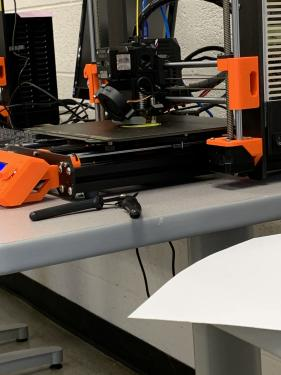
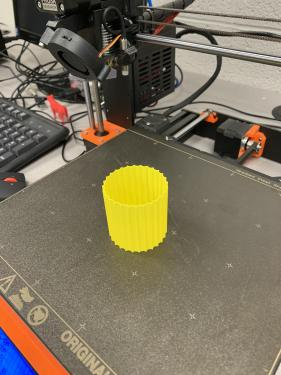
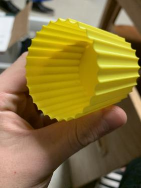
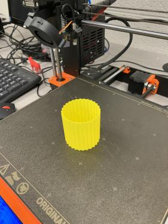
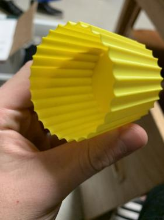

HOME
Week 4:Plants and Watering Cans
This week we will create a vase and a watering can

The first thing I did was follow the tutorial to make the vase on fusion 360. This was a simple task to do. Afterward I imported the file to PrusaSlicer as an stl 


I tested out changing the size of the vase but kept it the same size in the end. 


I went into the print settings going to verticle shells and selecting "Spiral vase" I would also go to the Solid layers option and changed the bottom from 3 to 4 layers. 
Going to preview mode I can see that my filled-in shape is now hollowed out allowing for the vase to become usable. I just had to make sure all my printing settings were correct and all I had to do was export the G-code. 
Printing the vase went pretty well nothing came up to complicate the print, the filament wasn't in need to be replaced so all I had to do was heat it and print. When it was finished it came out pretty well.    
 
The Watering Can
The next thing I had to do was create a watering can. I started by creating a new project, creating a sketch, and using the ellipse tool where I would then extrude it 45mm. 

The next thing I would do is make a new plane on the front of my watering can. I would sketch a circle followed by a line on this new plane, the circle to signify where the spout of the can would come out and a line to create an angled plane that will give shape to my water spout. 

With the new angled plane I would create another circle parallel with my previous one and extrude it 
Next, I would make two more angled planes with the addition of two more sketched circles that I would use to shape the piece of the can where the water will trickle out of. 
I would then use the loft tool to create the grudual increase in size from the two circles. 
Next I need to allow water to escape the can so I went back to sketch mode and used the circular pattern tool to create the holes needed. 
Next, I needed to extrude the holes so that it would work if I printed it. To finish up the watering can so it can hold water I used the shell tool to hollow it out.
There it is! 

Link to the files: here